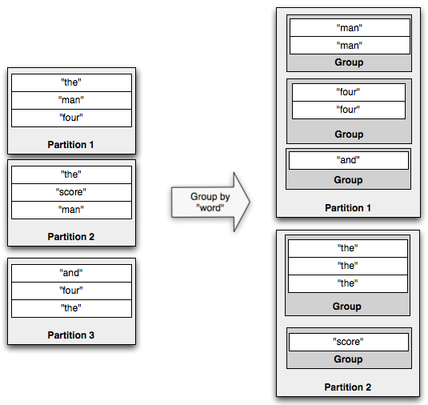

Tridentの中核となるデータモデルは、一連のバッチとして処理される"Stream"です。ストリームはクラスタ内のノード間で分割され、ストリームに適用される操作は各パーティション間で並列に適用されます。
Tridentには5種類の操作があります:
パーティションローカルな操作はネットワーク転送を伴わず、各バッチのパーティションに独立して適用されます。
関数は入力フィールドの集合を取り込み、出力としてゼロ個以上のタプルをemitします。出力タプルのフィールドは、ストリーム内の元の入力タプルに追加されます。関数がタプルをemitしない場合、元の入力タプルはフィルタされて取り除かれます。それ以外の場合、入力タプルは出力タプルごとに複製されます。以下の関数があるとします:
public class MyFunction extends BaseFunction {
public void execute(TridentTuple tuple, TridentCollector collector) {
for(int i=0; i < tuple.getInteger(0); i++) {
collector.emit(new Values(i));
}
}
}
ここで、変数"mystream"に、["a", "b", "c"]というフィールドを持つストリームが次のタプルであるとします:
[1, 2, 3]
[4, 1, 6]
[3, 0, 8]
以下のコードを実行すると:
mystream.each(new Fields("b"), new MyFunction(), new Fields("d")))
結果のタプルにはフィールド["a", "b", "c", "d"]があり、次のようになります:
[1, 2, 3, 0]
[1, 2, 3, 1]
[4, 1, 6, 0]
フィルタはタプルを入力として受け取り、そのタプルを保持するかどうかを決定します。以下のフィルタがあったとします:
public class MyFilter extends BaseFilter {
public boolean isKeep(TridentTuple tuple) {
return tuple.getInteger(0) == 1 && tuple.getInteger(1) == 2;
}
}
ここで、フィールド["a", "b", "c"]を持つ以下のタプルがあるとします:
[1, 2, 3]
[2, 1, 1]
[2, 3, 4]
以下のコードを実行すると:
mystream.filter(new MyFilter())
結果のタプルは次のようになります:
[1, 2, 3]
mapは与えられたマッピング関数をタプルのストリームに適用した結果からなるストリームを返します。
これは、1対1の変換をタプルに適用するために使用できます。
たとえば、単語のストリームがあり、それを大文字の単語のストリームに変換したい場合は、 次のようにマッピング関数を定義することができます。
public class UpperCase extends MapFunction {
@Override
public Values execute(TridentTuple input) {
return new Values(input.getString(0).toUpperCase());
}
}
次に、マッピング関数をストリームに適用して大文字のストリームを生成することができます。
mystream.map(new UpperCase())
flatMapはmapに似ていますが、ストリームの値に一対多変換を適用するという効果があります。
結果として得られた要素を新しいストリームに平坦化します。
たとえば、文のストリームがあり、それを単語のストリームに変換したい場合は、 次のようにflatMap関数を定義することができます、
public class Split extends FlatMapFunction {
@Override
public Iterable<Values> execute(TridentTuple input) {
List<Values> valuesList = new ArrayList<>();
for (String word : input.getString(0).split(" ")) {
valuesList.add(new Values(word));
}
return valuesList;
}
}
flatMap関数を文のストリームに適用して単語のストリームを生成し、
mystream.flatMap(new Split())
もちろん、これらの操作は連鎖させることができるので、次のように文のストリームから大文字になった単語のストリームを得ることができます、
mystream.flatMap(new Split()).map(new UpperCase())
peekを使って、それぞれのTridentタプルがストリームを流れるときに、追加のアクションを実行することができます。
これは、パイプラインの特定のポイントを流れていくタプルをデバッグするのに便利です。
例えば、以下のコードはgroupByに渡される前に単語を大文字に変換した結果を出力します
mystream.flatMap(new Split()).map(new UpperCase())
.peek(new Consumer() {
@Override
public void accept(TridentTuple input) {
System.out.println(input.getString(0));
}
})
.groupBy(new Fields("word"))
.persistentAggregate(new MemoryMapState.Factory(), new Count(), new Fields("count"))
minおよびminBy演算は、Tridentのストリームにおけるタプルのバッチについての各パーティションにおける最小値を返します。
Tridentのストリームにフィールド["device-id", "count"]と次のタプルのパーティションが含まれているとします
Partition 0:
[123, 2]
[113, 54]
[23, 28]
[237, 37]
[12, 23]
[62, 17]
[98, 42]
Partition 1:
[64, 18]
[72, 54]
[2, 28]
[742, 71]
[98, 45]
[62, 12]
[19, 174]
Partition 2:
[27, 94]
[82, 23]
[9, 86]
[53, 71]
[74, 37]
[51, 49]
[37, 98]
minBy演算は、上記のようなタプルのストリームに対して適用することができ、その結果、各パーティション内の最小のcountフィールドの値を持つタプルがemitされます。
mystream.minBy(new Fields("count"))
前述のパーティションについてのコードの結果は次のとおりです:
Partition 0:
[123, 2]
Partition 1:
[62, 12]
Partition 2:
[82, 23]
ストリームにおける他のminおよびminBy操作を見ることができます
public <T> Stream minBy(String inputFieldName, Comparator<T> comparator)
public Stream min(Comparator<TridentTuple> comparator)
下の例は、タプル上のそれぞれのコンパレータを使用してこれらのAPIを使用して最小値を見つける方法を示しています。
FixedBatchSpout spout = new FixedBatchSpout(allFields, 10, Vehicle.generateVehicles(20));
TridentTopology topology = new TridentTopology();
Stream vehiclesStream = topology.newStream("spout1", spout).
each(allFields, new Debug("##### vehicles"));
Stream slowVehiclesStream =
vehiclesStream
.min(new SpeedComparator()) // Comparator w.r.t speed on received tuple.
.each(vehicleField, new Debug("#### slowest vehicle"));
vehiclesStream
.minBy(Vehicle.FIELD_NAME, new EfficiencyComparator()) // Comparator w.r.t efficiency on received tuple.
.each(vehicleField, new Debug("#### least efficient vehicle"));
これらのAPIのアプリケーション例は、TridentMinMaxOfDevicesTopologyとTridentMinMaxOfVehiclesTopologyにあります。
maxとmaxByオペレーションは、Tridentのストリームにおけるタプルのバッチについて、各パーティションにおける最大値を返します。
Tridentのストリームには、上のセクションで説明したフィールド["device-id", "count"]が含まれているとします。
maxとmaxBy演算は上記のようなタプルのストリームに適用することができ、その結果、各パーティションのcountフィールドの最大値を持つタプルがemitされます。
mystream.maxBy(new Fields("count"))
前述のパーティションについてのコードの結果は次のとおりです:
Partition 0:
[113, 54]
Partition 1:
[19, 174]
Partition 2:
[37, 98]
ストリーム上の他のmaxとmaxBy関数を見ることができます
public <T> Stream maxBy(String inputFieldName, Comparator<T> comparator)
public Stream max(Comparator<TridentTuple> comparator)
以下の例は、タプル上のそれぞれのコンパレータを使用してこれらのAPIを使用して最大値を見つける方法を示しています。
FixedBatchSpout spout = new FixedBatchSpout(allFields, 10, Vehicle.generateVehicles(20));
TridentTopology topology = new TridentTopology();
Stream vehiclesStream = topology.newStream("spout1", spout).
each(allFields, new Debug("##### vehicles"));
vehiclesStream
.max(new SpeedComparator()) // Comparator w.r.t speed on received tuple.
.each(vehicleField, new Debug("#### fastest vehicle"))
.project(driverField)
.each(driverField, new Debug("##### fastest driver"));
vehiclesStream
.maxBy(Vehicle.FIELD_NAME, new EfficiencyComparator()) // Comparator w.r.t efficiency on received tuple.
.each(vehicleField, new Debug("#### most efficient vehicle"));
これらのAPIのアプリケーション例は、TridentMinMaxOfDevicesTopologyとTridentMinMaxOfVehiclesTopologyにあります。
Tridentストリームは、同じウィンドウとしてバッチ内のタプルを処理し、集計結果を次の操作にemitすることができます。 processing timeまたはタプルの数に基づく2種類のウィンドウ処理がサポートされています:
タプルは、processing timeまたはカウントに基づいて1つのウィンドウにグループ化されます。どのタプルも1つのウィンドウにしか属しません。
/**
* Returns a stream of tuples which are aggregated results of a tumbling window with every {@code windowCount} of tuples.
*/
public Stream tumblingWindow(int windowCount, WindowsStoreFactory windowStoreFactory,
Fields inputFields, Aggregator aggregator, Fields functionFields);
/**
* Returns a stream of tuples which are aggregated results of a window that tumbles at duration of {@code windowDuration}
*/
public Stream tumblingWindow(BaseWindowedBolt.Duration windowDuration, WindowsStoreFactory windowStoreFactory,
Fields inputFields, Aggregator aggregator, Fields functionFields);
タプルは、スライディング間隔ごとにウィンドウとウィンドウのスライドにグループ化されます。タプルは複数のウィンドウに属することができます。
/**
* Returns a stream of tuples which are aggregated results of a sliding window with every {@code windowCount} of tuples
* and slides the window after {@code slideCount}.
*/
public Stream slidingWindow(int windowCount, int slideCount, WindowsStoreFactory windowStoreFactory,
Fields inputFields, Aggregator aggregator, Fields functionFields);
/**
* Returns a stream of tuples which are aggregated results of a window which slides at duration of {@code slidingInterval}
* and completes a window at {@code windowDuration}
*/
public Stream slidingWindow(BaseWindowedBolt.Duration windowDuration, BaseWindowedBolt.Duration slidingInterval,
WindowsStoreFactory windowStoreFactory, Fields inputFields, Aggregator aggregator, Fields functionFields);
タンブリングやスライディングウィンドウの例は、ここにあります
以下は、サポートされているすべてのウィンドウ設定に対してWindowConfigをとる一般的なウィンドウAPIです。
public Stream window(WindowConfig windowConfig, WindowsStoreFactory windowStoreFactory, Fields inputFields,
Aggregator aggregator, Fields functionFields)
windowConfigは、以下のいずれかになります。
SlidingCountWindow.of(int windowCount, int slidingCount)SlidingDurationWindow.of(BaseWindowedBolt.Duration windowDuration, BaseWindowedBolt.Duration slidingDuration)TumblingCountWindow.of(int windowLength)TumblingDurationWindow.of(BaseWindowedBolt.Duration windowLength)トライデントのウィンドウAPIには、受け取ったタプルと集計値を格納するためのWindowsStoreFactoryが必要です 現在、HBaseについての基本的な実装は HBaseWindowsStoreFactoryで与えられています。これらは、それぞれのユースケースに対応するためにさらに拡張することができます。
ウィンドウ処理にHBaseWindowStoreFactoryを使用する例を以下に示します。
// window-state table should already be created with cf:tuples column
HBaseWindowsStoreFactory windowStoreFactory = new HBaseWindowsStoreFactory(new HashMap<String, Object>(), "window-state", "cf".getBytes("UTF-8"), "tuples".getBytes("UTF-8"));
FixedBatchSpout spout = new FixedBatchSpout(new Fields("sentence"), 3, new Values("the cow jumped over the moon"),
new Values("the man went to the store and bought some candy"), new Values("four score and seven years ago"),
new Values("how many apples can you eat"), new Values("to be or not to be the person"));
spout.setCycle(true);
TridentTopology topology = new TridentTopology();
Stream stream = topology.newStream("spout1", spout).parallelismHint(16).each(new Fields("sentence"),
new Split(), new Fields("word"))
.window(TumblingCountWindow.of(1000), windowStoreFactory, new Fields("word"), new CountAsAggregator(), new Fields("count"))
.peek(new Consumer() {
@Override
public void accept(TridentTuple input) {
LOG.info("Received tuple: [{}]", input);
}
});
StormTopology stormTopology = topology.build();
このセクションの上記すべてのAPIの詳細な説明は、こちらにあります
これらのAPIのサンプルアプリケーションは、TridentHBaseWindowingStoreTopologyとTridentWindowingInmemoryStoreTopologyにあります
partitionAggregateは、タプルのバッチの各パーティションで関数を実行します。functionとは異なり、partitionAggregateによってemitされたタプルは、与えられた入力タプルを置き換えます。この例を考えてみましょう:
mystream.partitionAggregate(new Fields("b"), new Sum(), new Fields("sum"))
入力ストリームにフィールド["a", "b"]と以下のタプルのパーティションが含まれているとします:
Partition 0:
["a", 1]
["b", 2]
Partition 1:
["a", 3]
["c", 8]
Partition 2:
["e", 1]
["d", 9]
["d", 10]
そのコードの出力ストリームには、"sum"という1つのフィールドを持つこれらのタプルが含まれます:
Partition 0:
[3]
Partition 1:
[11]
Partition 2:
[20]
aggregatorを定義するためのインターフェースには、次の3つのがあります: CombinerAggregator、ReducerAggregator、およびAggregatorです。
CombinerAggregatorのインターフェイスは次のとおりです:
public interface CombinerAggregator<T> extends Serializable {
T init(TridentTuple tuple);
T combine(T val1, T val2);
T zero();
}
CombinerAggregatorは、出力として単一のフィールドを持つ単一のタプルを返します。CombinerAggregatorsは各入力タプルに対してinit関数を実行し、combine関数を使用して1つの値が残るまで値をcombineします。パーティションにタプルがない場合、CombinerAggregatorはゼロ関数の出力をemitします。たとえば、Countの実装は次のとおりです:
public class Count implements CombinerAggregator<Long> {
public Long init(TridentTuple tuple) {
return 1L;
}
public Long combine(Long val1, Long val2) {
return val1 + val2;
}
public Long zero() {
return 0L;
}
}
CombinerAggregatorの利点は、partitionAggregateではなくaggregateメソッドで使用するときに見られます。その場合、Tridentは、ネットワーク上でタプルを転送する前に、部分集計を実行することによって計算を自動的に最適化します。
ReducerAggregatorには、次のインタフェースがあります:
public interface ReducerAggregator<T> extends Serializable {
T init();
T reduce(T curr, TridentTuple tuple);
}
ReducerAggregatorはinitで初期値を生成し、各入力タプルに対してその値を反復処理して、単一の値を出力として持つ単一のタプルを生成します。たとえば、CountをReducerAggregatorとして定義する方法は次のとおりです:
public class Count implements ReducerAggregator<Long> {
public Long init() {
return 0L;
}
public Long reduce(Long curr, TridentTuple tuple) {
return curr + 1;
}
}
ReducerAggregatorは、後で見るように、persistentAggregateとともに使用することもできます。
集約を実行するための最も一般的なインターフェースは、次のようなAggregatorです:
public interface Aggregator<T> extends Operation {
T init(Object batchId, TridentCollector collector);
void aggregate(T state, TridentTuple tuple, TridentCollector collector);
void complete(T state, TridentCollector collector);
}
Aggregatorは、任意の数のフィールドを持つ任意の数のタプルをemitできます。実行中の任意の時点でタプルをemitできます。Aggregatorは次のように実行されます:
CountをAggregatorとして実装する方法は次のとおりです:
public class CountAgg extends BaseAggregator<CountState> {
static class CountState {
long count = 0;
}
public CountState init(Object batchId, TridentCollector collector) {
return new CountState();
}
public void aggregate(CountState state, TridentTuple tuple, TridentCollector collector) {
state.count+=1;
}
public void complete(CountState state, TridentCollector collector) {
collector.emit(new Values(state.count));
}
}
複数のaggregatorを同時に実行したい場合もあります。これは連鎖と呼ばれ、次のように実行できます:
mystream.chainedAgg()
.partitionAggregate(new Count(), new Fields("count"))
.partitionAggregate(new Fields("b"), new Sum(), new Fields("sum"))
.chainEnd()
このコードは、各パーティションのCountおよびSum aggregatorを実行します。出力には、フィールド["count", "sum"]を持つ単一タプルが含まれます。
stateQueryおよびpartitionPersistは、それぞれ状態のソースをクエリおよび更新します。Trident state docで使用方法を読むことができます。
Streamの射影では、操作で指定されたフィールドのみが保持されます。フィールド["a", "b", "c", "d"]を持つストリームがあり、このコードを実行した場合:
mystream.project(new Fields("b", "d"))
出力ストリームにはフィールド["b", "d"]のみが含まれます。
再分割操作では、タプルがタスク間でどのように分割されるかについて変更する関数が実行されます。パーティションの数は、パーティション分割の結果として変更することもできます(たとえば、再分割後のparallelism hintが大きい場合など)。再パーティションにはネットワーク転送が必要です。再分割ができる関数は次のとおりです:
Tridentには、Streamで集計を実行するためのaggregateおよびpersistentAggregateメソッドがあります。aggregateはストリームの各バッチで独立して実行される一方で、persistentAggregateはストリーム内のすべてのバッチのすべてのタプルを集約し、その結果を状態のソースに格納します。
Stream上で集約を実行すると、グローバルな集計が行われます。ReducerAggregatorまたはAggregatorを使用すると、ストリームは最初に単一のパーティションに再分割され、そのパーティションで集約関数が実行されます。一方、CombinerAggregatorを使用する場合は、最初にTridentが各パーティションの部分集計を計算し、その後、単一のパーティションに再分割し、ネットワーク転送後に集約を完了します。CombinerAggregatorの方がはるかに効率的で、可能な限り使用するべきです。
aggregateを使用してバッチのグローバルなカウントを取得する例を次に示します:
mystream.aggregate(new Count(), new Fields("count"))
partitionAggregateと同様に、aggregateのaggregatorは連鎖できます。ただし、CombinerAggregatorを非CombinerAggregatorと連鎖させると、Tridentは部分集計の最適化を行うことができません。
Trident state docで、persistentAggregateの使用方法の詳細を読むことができます。
groupBy操作は、指定されたフィールドでpartitionByを実行してストリームを再分割し、その後、各パーティション内でグループ化するフィールドが等しいタプルをグループ化します。たとえば、groupBy操作の例を次に示します。

グループ化されたストリームでaggregatorを実行する場合、集約はバッチ全体ではなく各グループ内で実行されます。persistentAggregateはGroupedStreamで実行することもできます。その場合、結果は、キーをグループ化フィールドとして、MapStateに格納されます。persistentAggregateの詳細については、Trident state docを参照してください。
通常のストリームと同様に、グループ化されたストリームのaggregatorも連鎖できます。
APIの最後の部分では、さまざまなストリームを結合しています。ストリームを結合する最も簡単な方法は、ストリームを1つのストリームにマージすることです。 TridentTopology#mergeメソッドを使用すると、次のようにすることができます:
topology.merge(stream1, stream2, stream3);
Tridentは、新しくmergeされたストリームの出力フィールドを、引数の最初のストリームの出力フィールドを使って名前付けします。
ストリームを結合する別の方法は、Joinを使用する方法です。現在、SQLのような標準的な結合には有限の入力が必要です。このため、それは無限の流れでは意味をなしません。TridentのJoinは、Spoutから出てくる小さなバッチ内にのみ適用されます。
フィールド ["key", "val1", "val2"]を含むストリームと、["x", "val1"]含む別のストリームをJoinする例を次に示します:
topology.join(stream1, new Fields("key"), stream2, new Fields("x"), new Fields("key", "a", "b", "c"));
これは、それぞれのストリームの結合フィールドとして"key"と"x"を使用してstream1とstream2を結合します。次に、Tridentは、入力ストリームが重複するフィールド名を持つ可能性があるため、新しいストリームのすべての出力フィールドに名前を付ける必要があります。joinからemitされるタプルには、次のものが含まれます:
異なるSpoutから発生したストリーム間で結合が発生すると、それらのSpoutはどのようにバッチのemitについて同期されます。つまり、処理のバッチには双方のSpoutからのタプルが含まれます。
あなたは疑問に思うかもしれません - どうやって"windowed join"のようなことをしているか - 結合の片側からのタプルは、結合の反対側からのタプルの最後の1時間と結合されます。
これを行うには、partitionPersistとstateQueryを使用します。結合の一方の側からのタプルの最後の1時間は、結合フィールドをキーとした状態のソースに格納され、ローテーションされます。次に、stateQueryは、"join"を実行するために結合フィールドによって検索を行います。